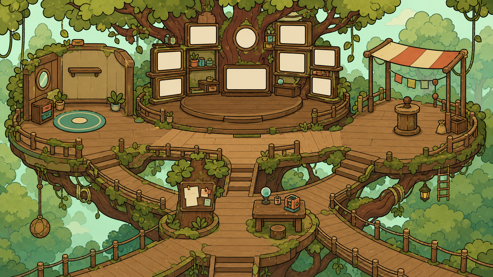
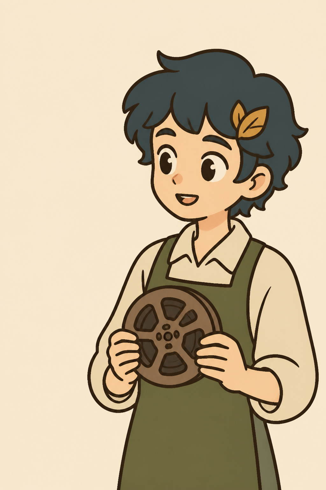

树林与海岸之间，一片持续生长的开放公域
这儿
在无边界公域发现影像、回应需求、收集会再生的材料；回到自己的林间地块清理土地、种植和建造，让每次远行都留下看得见的改变。
浏览与互动会被记录，用于推荐研究。灵感币是虚拟预算，没有现金价值。
正在展开开放公域

这里是一片开放的公域。林子里安静，商业街上热闹，海边总有漂流瓶。你走到哪里，就可以在哪里留下东西。

在无边界公域发现影像、回应需求、收集会再生的材料；回到自己的林间地块清理土地、种植和建造，让每次远行都留下看得见的改变。
浏览与互动会被记录，用于推荐研究。灵感币是虚拟预算，没有现金价值。